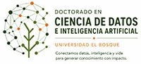
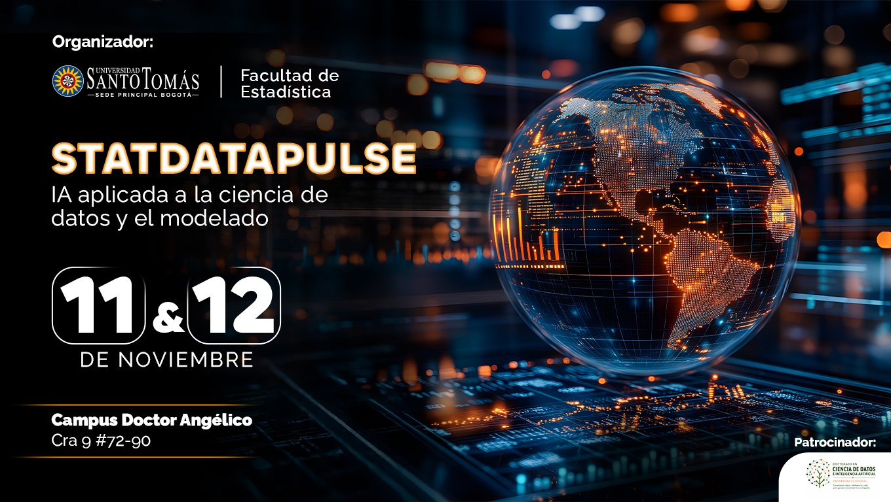
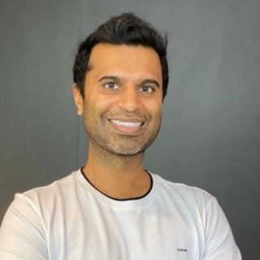
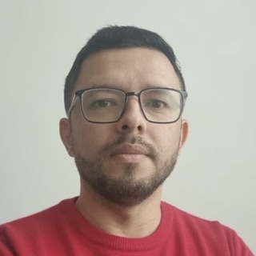

FACULTAD DE ESTADÍSTICA · UNIVERSIDAD SANTO TOMÁS
IA aplicada a la ciencia de datos y el modelado
DE NOVIEMBREDE 2026
Campus Doctor Angélico · Cra 9 #72-90, Bogotá
Inscripciones abiertas · pago hasta el 10 de noviembre

Cuando el modelo aprende, la estadística decide

La edición 2026 del simposio se concentra en un punto concreto: qué cambia en el trabajo estadístico cuando la inteligencia artificial entra al proceso de modelado. Dos días de charlas, conferencias, comunicaciones y seis cursillos prácticos, con código en la mano: de los modelos fundacionales y los agentes de IA para series de tiempo al riesgo financiero, los datos espaciales en salud pública, las encuestas complejas, el machine learning con datos faltantes y Power BI.
Organiza la Facultad de Estadística de la Universidad Santo Tomás, con el patrocinio del Doctorado en Ciencia de Datos e Inteligencia Artificial de la Universidad El Bosque. Está dirigido a estudiantes, docentes, investigadores y profesionales que trabajen con datos.
Dos días de charlas, cursillos y comunicaciones
Cada cursillo tiene dos sesiones. Los del grupo A (1A, 2A y 3A) van el miércoles de 14:00 a 16:00 y el jueves de 10:00 a 12:00; los del grupo B (1B, 2B y 3B), el miércoles de 16:00 a 18:00 y el jueves de 14:00 a 16:00. Reserva tu cupo.
La inscripción incluye los cursillos. Desde $90.000, con pago hasta el 10 de noviembre.
Ponentes y talleristas
CHARLAS · AUDITORIO MAYOR

CHARLA INAUGURAL Ravi Kalia Profesor del Doctorado en Ciencia de Datos e Inteligencia Artificial, Universidad El BosqueEl Dr. Kalia obtuvo su doctorado en Statistical Machine Learning en la Universidad de Oxford bajo la dirección del profesor Brian Ripley, uno de los cinco ganadores del Premio Rousseeuw de Estadística 2026 por sus contribuciones al establecimiento del lenguaje R.
Ha desarrollado una trayectoria que integra investigación de frontera y desarrollo tecnológico. A lo largo de su carrera ha liderado proyectos en aprendizaje automático, modelos generativos, procesamiento de lenguaje natural y sistemas basados en grandes modelos de lenguaje, tanto en la academia como en la industria, colaborando con organizaciones de los sectores financiero, biotecnológico y tecnológico.
Ver perfil
Es profesor asociado del Departamento de Estadística de la Universidad Nacional de Colombia y consultor estadístico. Desarrolla métodos estadísticos para abordar problemas complejos en ciencias sociales, negocios, economía, finanzas y biología.
Sus intereses de investigación incluyen el modelado estadístico bayesiano, el aprendizaje estadístico, los métodos de Montecarlo mediante cadenas de Markov, el análisis estadístico de redes, el análisis estadístico de datos longitudinales y espaciales, y los métodos escalables para la inferencia en alta dimensión.
Ver perfil
Es consultor y formador con más de 16 años de experiencia diseñando e implementando proyectos de gestión estratégica, mejora de procesos y análisis de necesidades para los sectores público y privado en Latinoamérica. Experto en metodologías PMI y marcos ágiles, ha liderado iniciativas de mejora continua apoyadas en inteligencia artificial, entre ellas automatización de flujos, modelos de predicción, RPA, diseño de asistentes personalizados, prototipado con IA generativa y adopción tecnológica en equipos corporativos.
Su trayectoria académica incluye la docencia y la creación de contenidos en universidades de Colombia y América Latina, como la Universidad EAN, la Universidad de La Sabana, la Universidad El Bosque, la Universidad Viña del Mar, la Universidad UTE, UTEL y la Universidad Piloto de Colombia, entre otras. Como consultor ha trabajado con compañías como Grupo Keralty, Incopimar Ingenieros, Grupo ENEL, Legado Publicidad, ZR Ingeniería y SRD.
Apasionado por la formación empresarial, ha impartido diplomados y talleres sobre dirección de proyectos, transformación digital, innovación y productividad basada en IA.
CONFERENCIAS · MIÉRCOLES 11, 18:30
Ver perfil
Es magíster en Estadística y tiene más de 10 años de experiencia como científico de datos y estadístico. Es experto en metodologías estadísticas y de machine learning, con altas competencias en Python, R, herramientas de big data (Hadoop, Spark) y de inteligencia de negocios (Power BI, Tableau, Shiny).
Ver perfil
Es estadístico, licenciado y magíster (M.Sc.), profesor titular y jefe del Departamento de Estadística de la Universidad de Los Andes en Mérida, Venezuela, con amplia experiencia en análisis de datos en diversas áreas del conocimiento.
Sus especialidades son el análisis de supervivencia y confiabilidad, los modelos de eventos recurrentes, la bioestadística, la estadística multivariada y el modelamiento estadístico: modelos lineales, lineales generalizados y longitudinales. Maneja software general y estadístico como R, SAS, STATA, SPSS y Minitab, entre otros.
Ver perfil
Es licenciado en Matemáticas, magíster en Estadística Aplicada y magíster en Ciencias-Matemáticas, con 16 años de experiencia docente en espacios académicos como Probabilidad, Inferencia Estadística y Muestreo Estadístico. Su trayectoria profesional incluye colaboraciones con entidades como el DANE, la FAO y el ICFES.
CURSILLOS
Ver perfil
Es profesor asociado de la Universidad El Bosque, con más de 20 años de experiencia en docencia universitaria de pregrado y posgrado y en investigación. Es magíster en Estadística, especialista en Matemática Aplicada y licenciado en Matemáticas y Estadística.
Tiene una amplia trayectoria en la enseñanza de la matemática, la estadística y la estadística espacial, y en el desarrollo de proyectos de investigación interdisciplinarios en áreas como la salud y la administración de empresas. Ha participado en procesos de formación académica en diversas instituciones de educación superior de Colombia, contribuyendo al fortalecimiento de las competencias analíticas y estadísticas de profesionales e investigadores.
Ver perfil
Es licenciado en Matemáticas, especialista en Actuaría y magíster en Ciencias Económicas. Es profesor universitario e investigador, con intereses en matemáticas aplicadas, probabilidad, estadística y econometría.
Ver perfil
Es estadístico, magíster y candidato a doctor en Estadística, especializado en procesos estocásticos y modelado estadístico. Tiene experiencia docente en pregrado y posgrado en asignaturas como Modelos Lineales Generalizados, Estadística Bayesiana, Diseño de Experimentos y Estadística No Paramétrica, entre otras.
Ha sido ponente en congresos nacionales e internacionales y es autor de artículos científicos en estadística teórica y aplicada. También ha liderado y acompañado proyectos de consultoría e investigación en los sectores público y privado, principalmente en las áreas de salud e industria.
Ver perfil
Es estadístico y magíster en Ciencias Estadísticas, con diez años de experiencia en programación estadística y más de cinco años de docencia universitaria. Su trabajo se centra en el muestreo probabilístico, el análisis de encuestas complejas, la calibración de factores de expansión y la estimación en áreas pequeñas.
Ha trabajado en el ICFES y como consultor para la Comisión Económica para América Latina y el Caribe (CEPAL), apoyando proyectos de diseño muestral, integración de fuentes de información y producción de indicadores sociales en distintos países de América Latina y el Caribe. Su experiencia incluye aplicaciones relacionadas con pobreza multidimensional, salud, educación y mercado laboral.
Desarrolla herramientas en R para automatizar procesos estadísticos, generar reportes reproducibles y facilitar el uso de metodologías especializadas mediante aplicaciones Shiny.

CURSILLO 2B Mario Pacheco López Universidad Santo Tomás Métodos de machine learning y datos faltantesVer perfil
Es estadístico y magíster en Ciencias Estadísticas, con más de 10 años de experiencia en docencia, investigación y consultoría estadística. Es experto estadístico de la DIRPEN del DANE para la evaluación de operaciones estadísticas a nivel nacional, director del grupo de investigación USTADISTICA y editor de la revista Comunicaciones en Estadística.
Ver perfil
Es ingeniero electrónico, con maestría en Ingeniería Electrónica y maestría en Ciencias de la Información y las Comunicaciones. Tiene 25 años de experiencia docente en áreas como series de tiempo, inferencia estadística, estadística no paramétrica, bases de datos y herramientas para big data.
Además, suma 36 años de trayectoria profesional en el sector de las telecomunicaciones y en el desarrollo de software y hardware, que combina con su labor académica.
Inscripciones abiertas
Cada perfil tiene su propio enlace y su propio valor. Busca el tuyo y elige si eres de la comunidad USTA o externo: el enlace te lleva a la plataforma de la Universidad con esa categoría ya seleccionada.
Inscripciones abiertas desde el 28 de septiembre de 2026.
Paso 1: Inscríbete y paga en la plataforma de la Universidad
Cada enlace abre la plataforma de Educación Continua en otra pestaña, con el panel «Horario» de tu categoría. Para seguir, pulsa el botón verde + de ese panel.
-
Estudiante de pregrado, Comunidad USTA $90.000 Inscribirme Estudiante de pregrado, Externo $120.000 Inscribirme
Estudiante de pregrado
-
Estudiante de posgrado, Comunidad USTA $170.000 Inscribirme Estudiante de posgrado, Externo $170.000 Inscribirme
Estudiante de posgrado
-
Profesor, Comunidad USTA $190.000 Inscribirme Profesor, Externo $210.000 Inscribirme
Profesor
-
Otros participantes, Tarifa única $220.000 Inscribirme
Otros participantes
Si no estás en ninguna de las categorías anteriores.
Paso 2: Reserva tu cupo en los cursillos
Los cursillos están incluidos en la inscripción. Después de pagar, elige uno del grupo A y uno del grupo B: no se cruzan en horario. Cada cursillo tiene 30 cupos presenciales, que se asignan en orden de llegada; cuando se agotan, puedes tomarlo en remoto, sin límite de cupo. El remoto es por Microsoft Teams y el enlace llega a tu correo. No necesitas cuenta de Google. Antes del evento, el comité cruza la lista con los pagos de la plataforma.
- Valores en pesos colombianos.
- Los autores de los trabajos aceptados en la convocatoria también se inscriben y pagan, en la categoría que les corresponda.
- ¿Dudas con la inscripción? Escribe a javiersierra@usta.edu.co.
Comité organizador
Convocatoria y recursos
Convocatoria de trabajos
Comunicaciones cortas de 20 minutos y pósteres. Resultados el 19 de octubre.
Ver la convocatoriaRepositorios de cursillos
Código, datos y cuadernos de cada cursillo, publicados durante el evento.
AccederPresentaciones y resúmenes
Material de las conferencias y los pósteres, disponible tras cada sesión.
Ver materiales